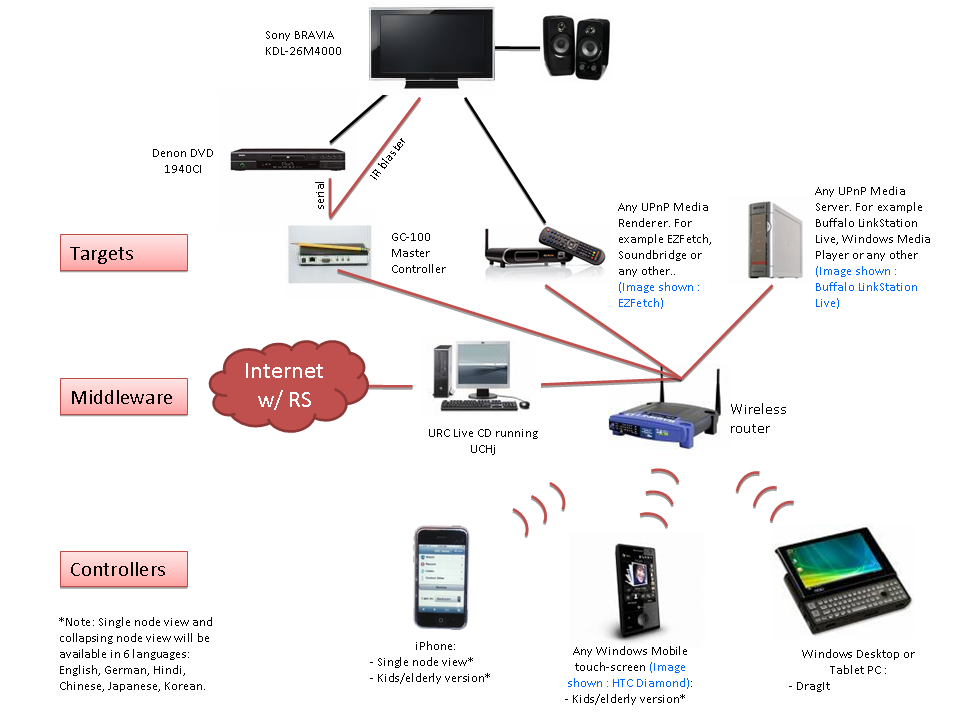

Figure 1: Sample setup of UCHj, Controllers and Target Devices(description of figure). Note that same Controller, Target or Device may occur multiple times. For simplicity, a few are shown in the figure.